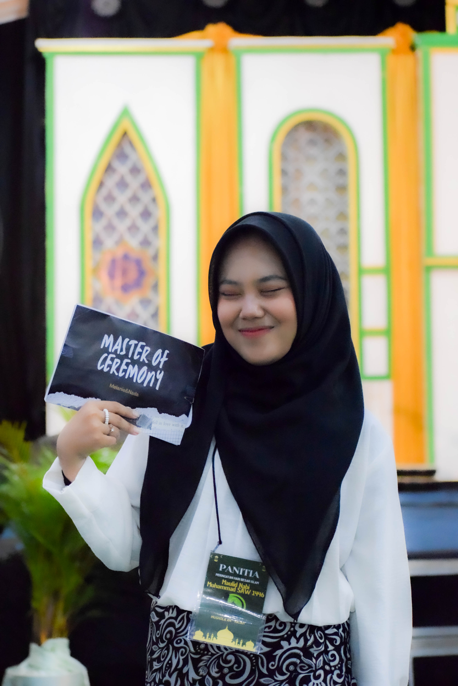
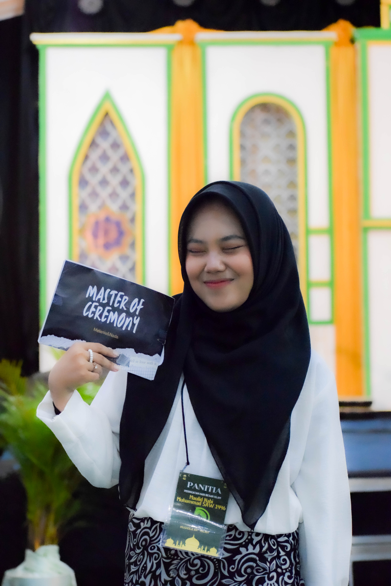
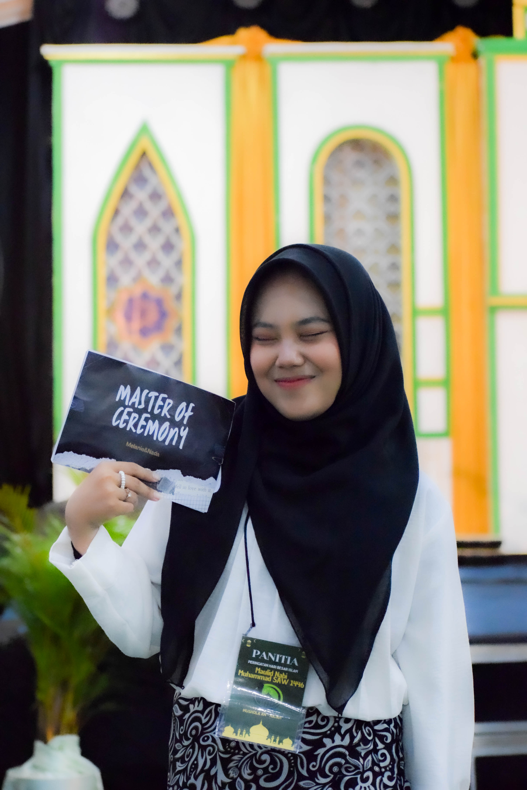
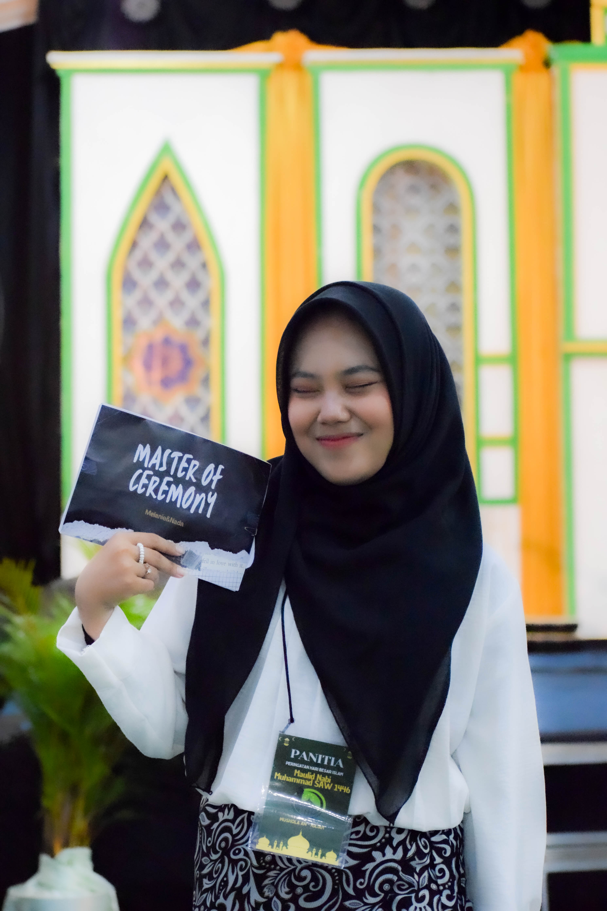

Portfolio

 



Selamat datang di YNZ Project — ruang berkarya yang lahir dari ketertarikan mendalam terhadap cahaya, emosi, dan keindahan dalam setiap ekspresi manusia. Saya adalah seorang fotografer yang percaya bahwa setiap wajah menyimpan cerita, dan setiap momen layak untuk diabadikan dengan sepenuh rasa. Fotografi bagi saya bukan hanya tentang hasil gambar, tetapi tentang proses membangun koneksi, menangkap emosi, dan menciptakan karya yang bisa berbicara tanpa kata. Dengan pendekatan yang minimalis, futuristik, dan elegan, saya menghadirkan visual yang tidak hanya estetis, tapi juga bermakna. Melalui YNZ Project, saya terus mengeksplorasi batas-batas kreativitas — karena bagi saya, berkarya tak seharusnya punya batas. Terima kasih telah berkunjung. Mari kita ciptakan sesuatu yang berkesan bersama.
WhatsApp: +62 881-0255-48603
Email: yanszfg@gmail.com
Instagram: @yansz.project